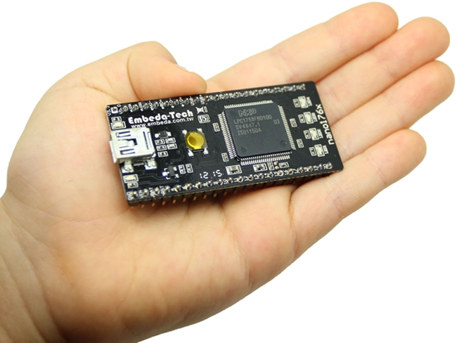

Welcome to Embeda nano1768

Features
- ARM Cortex-M3 100/120MHz, (LPC1768/LPC1769)
- uCXpresso (an Embedded C/C++ Real-Time Machine) Framework
- Multi-Thread RTOS.
- 10/100 base Ethernet Interface, on board PHY ready
- On board microSD socket.
- FAT32 file system and long filename supported.
- Http, Ftp, Telnet, Server supported.
- IGMP, DNS-Client, DHCP-Client, AutoIP (RFC3927) supported.
- System time supported and synchronize by SNTP.
- Programmable I/O: SPI, UART, ADC, PWM, I2C and CAN.
- AJAX, CGI, SSI supported
- USB CDC serial comm Port supported.
- USB Mass Storage Device supported. (for bootloader)
Copyright 2012 www.embeda.com.tw